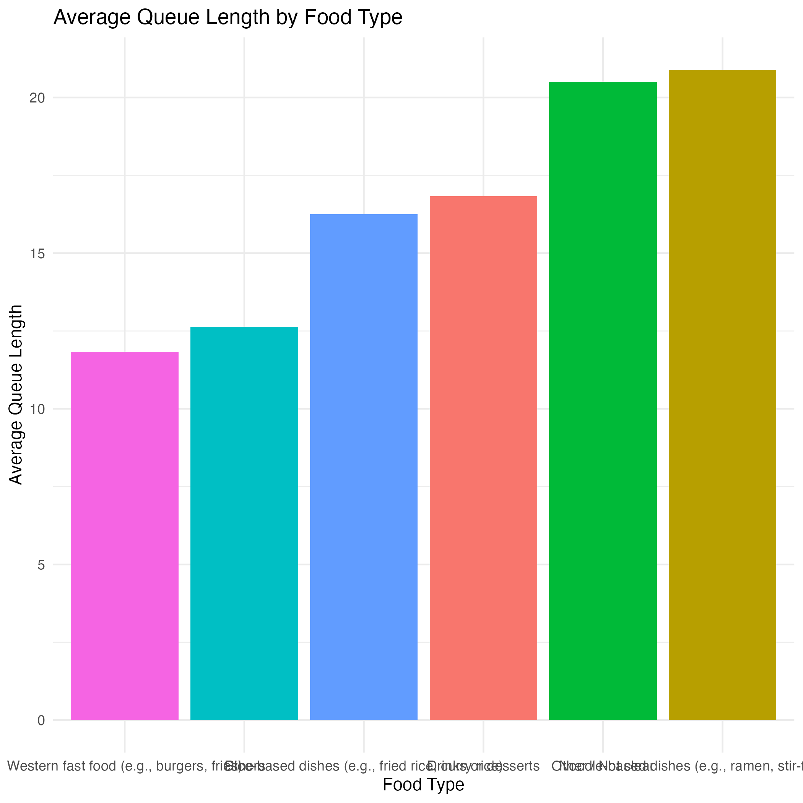
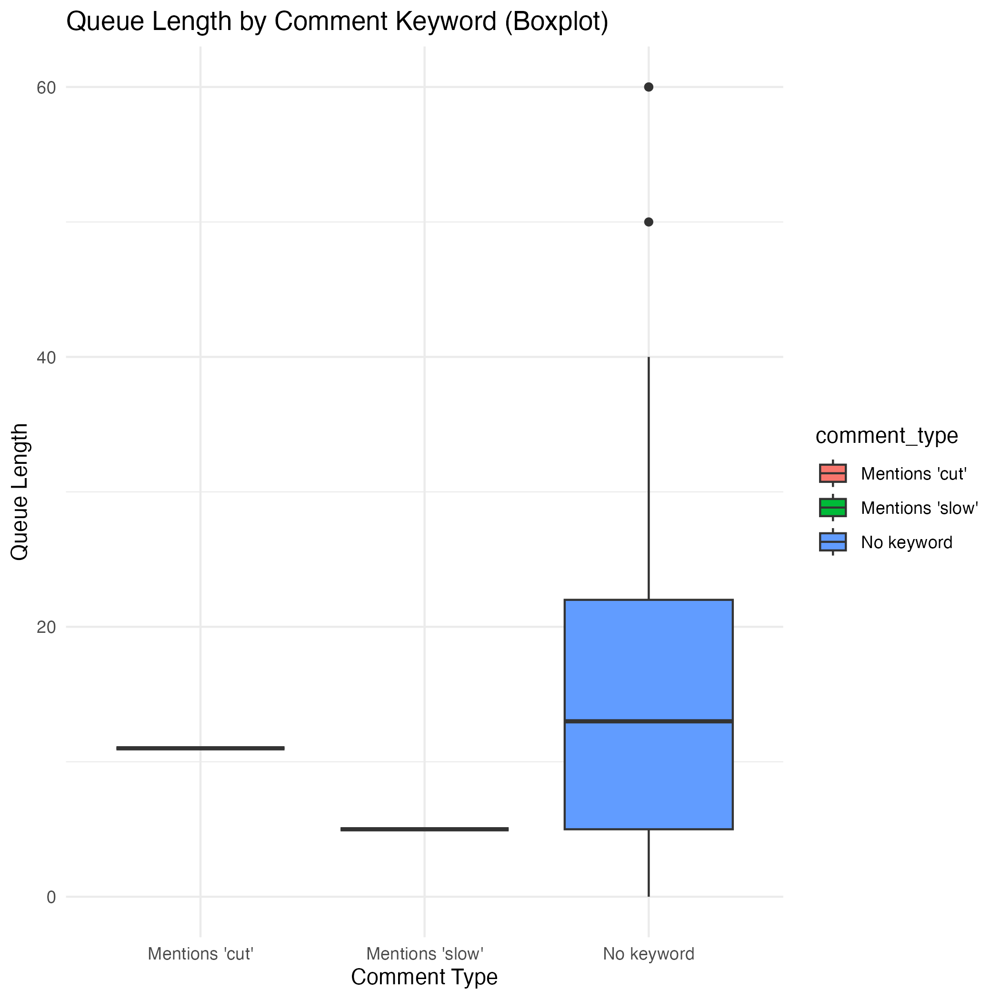

This is a visual story about lunchtime patterns in a university cafeteria. Over several observation periods, I gathered data regarding how many people were queueing at different food stalls, what type of food was most commonly ordered, and any noteworthy behaviors or events that occurred during lunchtime.
The primary aim was to understand patterns in food preferences and queuing behaviors, which could reflect not only popularity but also operational efficiency or student habits. This data was collected using a structured Google Form designed for observational logging, not surveys.
In this story, I present three visualisations to share some key findings from the observations.

The first visualisation is a bar chart showing the number of times each food type was observed being ordered. This gives a clear picture of which food types were most popular in the cafeteria.
From the chart, we can see which categories—such as rice-based, noodle-based, or fast food—drew the most attention from students. Understanding these preferences could help with cafeteria planning, resource allocation, or promotion strategies. This also reflects broader food culture trends and dietary habits among students at our campus.

The second chart visualises the average queue length for each food type. This gives us insight into whether popular foods also lead to longer queues, or if some stalls manage to serve people more efficiently despite high demand.
For example, a food type with a high number of orders but relatively short queues may indicate fast service. On the other hand, longer queues for certain types might suggest slower preparation or higher demand at specific times. This plot helps connect food preference with waiting time, offering a more complete understanding of the cafeteria experience.

To complement the quantitative data, I also collected qualitative observations in a free-text field. These comments were analyzed for keywords such as “slow” or “cut,” which might indicate delays, congestion, or non-standard behavior.
This visualisation categorizes how many times such keywords appeared in comments. Though based on subjective notes, these observations provide additional context. Comments mentioning slowness might reflect operational delays or student frustration, while keywords like “cut” could indicate queue-jumping or conflicts.
Incorporating this narrative element helps round out the story with real-world color.
This project demonstrates how observational data can be transformed
into meaningful visual insights using tools like ggplot2.
It also emphasizes the value of combining structured data with
open-ended observations.
By identifying which food types are most popular, how efficiently different stalls manage queues, and what behaviors or events are noticed during peak times, we can draw conclusions that are helpful not only for academic purposes but also for practical improvements.
Creating this visual data story helped me improve my skills in data collection, cleaning, plotting, and communication. It’s a good example of how simple observations can lead to structured, insightful findings when combined with thoughtful analysis and clear visualisation.